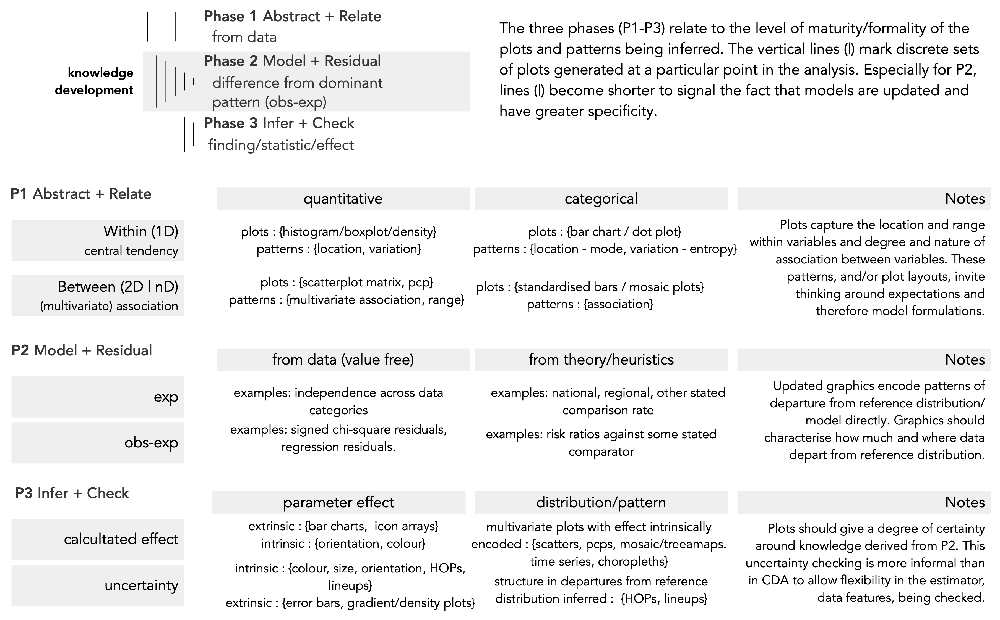
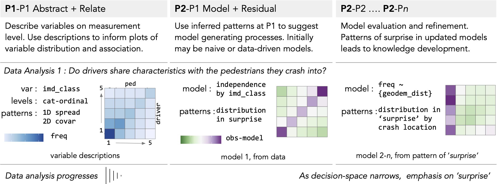
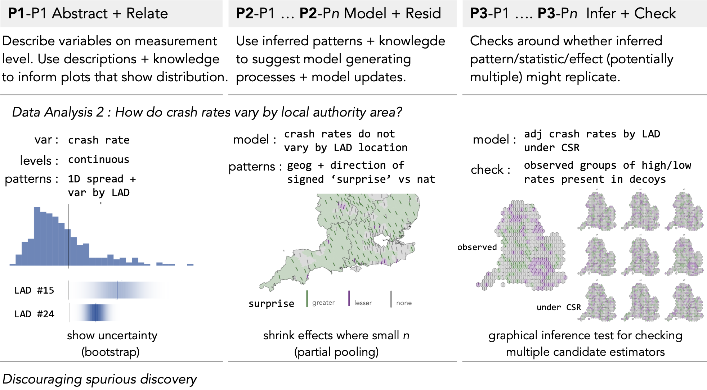

![]()
Important links
Abstract
Road safety research is a data-rich field with large social impacts. Like in medical research, the ambition is to build knowledge around risk factors that can save lives. Unlike medical research, road safety research generates empirical findings from messy observational datasets. Records of road crashes contain numerous intersecting categorical variables, dominating patterns that are complicated by confounding and, when conditioning on data to make inferences net of this, observed effects that are subject to uncertainty due to diminishing sample sizes. We demonstrate how visual data analysis approaches can inject rigor into exploratory analysis of such datasets. A framework is presented whereby graphics are used to expose, model and evaluate spatial patterns in observational data, as well as protect against false discovery. Evidence for the framework is presented through an applied data analysis of national crash patterns recorded in STATS19, the main source of road crash information in Great Britain. Our framework moves beyond typical depictions of exploratory data analysis and transfers to complex data analysis decision spaces characteristic of modern geographical analysis.
Important figures



BibTeX citation
@article{beecham_vis_2023,
author = {Beecham, R. and Lovelace, R.},
doi = {10.1111/gean.12338},
jounral = {Geographical Analysis},
title = {A framework for inserting visually-supported inferences into geographical analysis workflow: application to road safety research},
volume = {55},
number = {3},
pages = {345--366},
year = {2023}
}